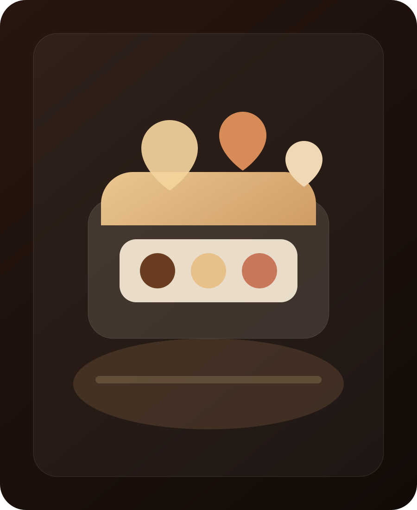
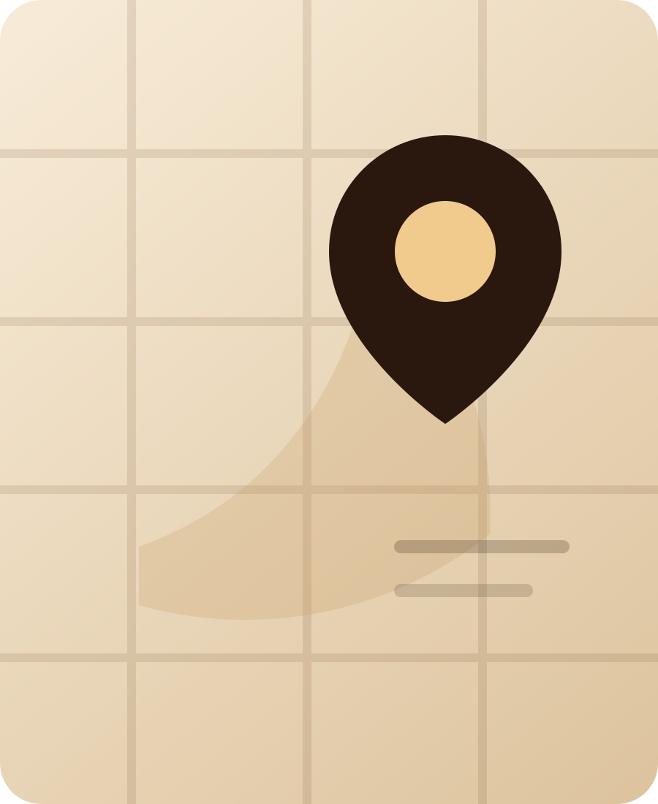

Concept premium da conversione
Non solo un bar. Una colazione che si prenota, un dolce che si desidera, un gelato che si ordina.
La nuova pagina di Caffè Sospeso mette subito in primo piano ciò che vende davvero: colazioni prenotabili dalle 7:00 alle 10:00, ordine minimo €5, dolci, gelati artigianali in vaschetta e stuzzicheria per piccoli eventi, uffici e famiglie.
Perché questa versione vince
Il vecchio sito racconta. Questo sito fa agire.
Ogni sezione ha uno scopo commerciale: far scegliere, far desiderare, far inviare una richiesta. Il locale conserva il suo tono elegante, ma la pagina lavora come un venditore digitale.
Colazioni prenotabili
Dalle 7 alle 10, tutto più semplice: scegli, invia, ritira.
Una sezione costruita per trasformare l’abitudine quotidiana in ordine anticipato. Il cliente capisce in pochi secondi cosa può richiedere e passa subito al contatto.
Paste
Il banco colazione, ordinato e leggibile.
Cornetto vuoto
Cornetto crema
Cornetto Nutella
Cornetto Nutella bianca
Cornetto pistacchio
Brioche
Polacca
Treccia
Krapfen
Caffetteria
Abbinamenti rapidi per aumentare lo scontrino.
Caffè espressoClassico
CappuccinoMattina perfetta
MacchiatoCaldo o freddo
Latte macchiatoAlternativa morbida
Bevande caldeSu richiesta
Strategia
Ordini preparati prima. Attese ridotte. Più servizio.
Perfetto per lavoratori, studenti, famiglie e piccoli uffici. Il sito non deve solo essere bello: deve alleggerire il banco e generare richieste vere.
Vai al modulo rapido →Prenotazione colazione
Configuratore WhatsApp: zero frizione, massima chiarezza.
Ho costruito un flusso semplice: il cliente seleziona i prodotti, indica la fascia di ritiro e invia tutto in chat. L’ordine minimo di €5 è evidenziato in modo costante, senza inventare prezzi non confermati.
Seleziona
Paste, caffetteria e note.
Scegli fascia
Dalle 07:00 alle 10:00.
Invia
WhatsApp già compilato.
Pasticceria
Dolci da banco, monoporzioni e richieste da ricorrenza.
Il sito ufficiale già parla di monoporzioni e torte. Qui le trasformiamo in un’offerta più chiara: non solo “cosa facciamo”, ma “cosa puoi chiedere adesso”.

Gelateria artigianale
Vaschette da 0,5 kg, 1 kg e 1,5 kg. La parte più facile da vendere online.
Il messaggio deve essere immediato: scegli il formato, indica i gusti, invia la richiesta. Ho previsto una sezione con oltre dieci gusti, facilmente modificabile quando il locale conferma l’assortimento ufficiale.
CioccolatoCremaFior di lattePistacchio
NocciolaStracciatellaCaffèFragola
LimoneCoccoYogurtAmarena
Richiedi una vaschetta gelato
Stuzzicheria
€0,90 al pezzo. Piccolo formato, grande occasione commerciale.
Questa sezione apre il locale a ordini per buffet, uffici, feste e richieste in quantità. Va messa in evidenza perché è immediata da capire e facile da ordinare.
Focaccine
Perfette per vassoi misti e piccoli rinfreschi.
Panzerottini
Formato agile, richiesta facile, resa alta.
Crocchè
Un classico da buffet e aperitivo.
Pizzette mignon
La chiusura naturale di un vassoio completo.
Cosa cambia davvero
Un sito più credibile, più utile, più aggressivo sul contatto.
Hero con proposta chiara
Il visitatore capisce subito cosa può prenotare e perché contattare.
Funnel WhatsApp
Ogni servizio importante ha una CTA specifica e già contestualizzata.
Offerta organizzata
Colazioni, dolci, gelati e salati non si confondono: si vendono.
SEO locale
Dati, schema business, posizione e blocco contatti strutturato.
Posizione e contatti
Caffè Sospeso, Andria.
Blocco finale progettato per chi arriva da ricerca locale o social: chiamata, WhatsApp e mappa devono stare tutti nello stesso punto, senza dispersione.
Nota progetto: prima della messa online definitiva va confermato il civico esatto da utilizzare in pagina e in mappa.
